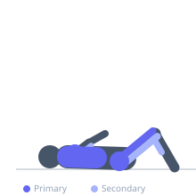
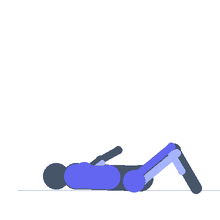

Exercise guide / Air Bike Sprint — Assault / Echo Bike
Air Bike Sprint — Assault / Echo Bike
The air bike (Assault, Echo, or Airdyne style) uses a large fan wheel that creates resistance proportional to pedalling speed — the harder you work, the more resistance is generated, making it impossible to outpace the machine. The dual-action design engages both the lower body (pedalling) and upper body (pushing and pulling the moving handlebars) simultaneously, recruiting the quadriceps, gluteus maximus, anterior and posterior deltoids, and pectorals in every stroke. Sprint intervals on the air bike are considered among the most demanding conditioning tools in existence and produce maximal cardiovascular stress in very short durations.
Primary muscles
vastus lateralis
gluteus maximus
deltoid anterior
pectoralis major sternal
Secondary muscles
biceps femoris long head
deltoid posterior
gastrocnemius medial
triceps long head
Stabilizers
transverse abdominis
internal oblique
Equipment


Starting position
- Adjust the seat so the knees are slightly bent at the bottom of the pedal stroke. Grip both moving handles. Sit upright with the core braced.
Setup
- Set any desired calorie or time targets on the monitor. Clip in or use the flat pedal cages. The machine requires no resistance setting — it self-regulates based on output.
Steps
- Step 1: Warm up for 2–3 minutes at a moderate pace, alternating between legs-only and arms-only before combining both.
- Step 2: Sprint at absolute maximum effort — push and pull the handles hard while pedalling as fast as possible. Duration: 10–20 seconds.
- Step 3: Rest completely or pedal very slowly for 40–60 seconds.
- Step 4: Repeat 6–10 rounds.
- Step 5: Cool down for 3–5 minutes at an easy pace.
Coaching cues
- Push AND pull the handles — both phases generate power
- Drive the elbows back hard — think of a sprint arm swing
- Keep the core tight to transfer power from legs to arms
Breathing
- During maximal sprints, breathe as powerfully as possible. Do not hold the breath. During rest, focus on slowing heart rate with controlled diaphragmatic breathing.
Range of motion
- Full push-and-pull through the handlebar range of motion. Full pedal stroke through the bottom of the arc.
Tempo
- Protocol 1 (maximal): 10 seconds max effort / 50 seconds rest × 10. Protocol 2 (Tabata-style): 20 seconds hard / 10 seconds rest × 8. Protocol 3: 30 calories as fast as possible / rest 2 minutes × 5.
Common mistakes
- Sprinting for too long — 10–20 seconds is usually the ceiling for truly maximal output on an air bike
- Using arms only or legs only rather than combining both for maximum calorie and cardiovascular output
- Not resting long enough between efforts, which prevents true maximal intensity on subsequent bouts
Safety
- The fan blades spin at high speed — keep fingers and clothing away from the fan housing
- The air bike can be extremely demanding on the cardiovascular system — beginners should start with moderate efforts before attempting all-out sprints
Training
- endurance: 6–10 reps
- endurance: 1–1 sets
- Rest: {'endurance': 50}